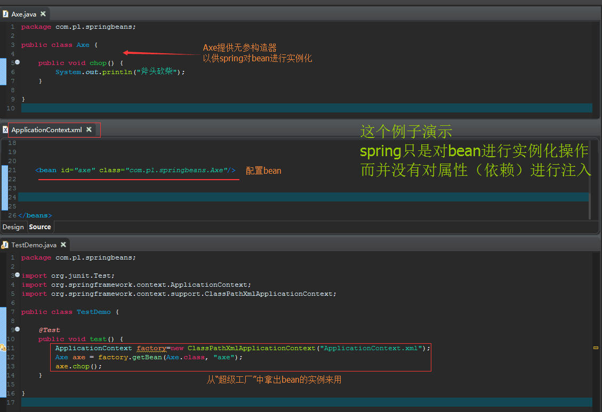
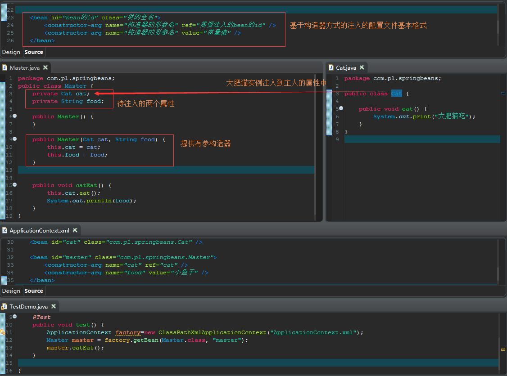
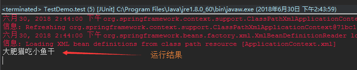
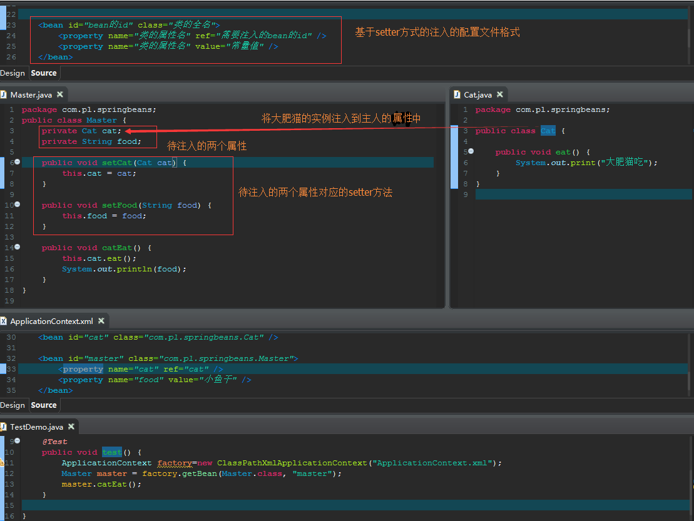
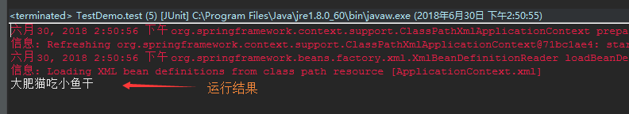
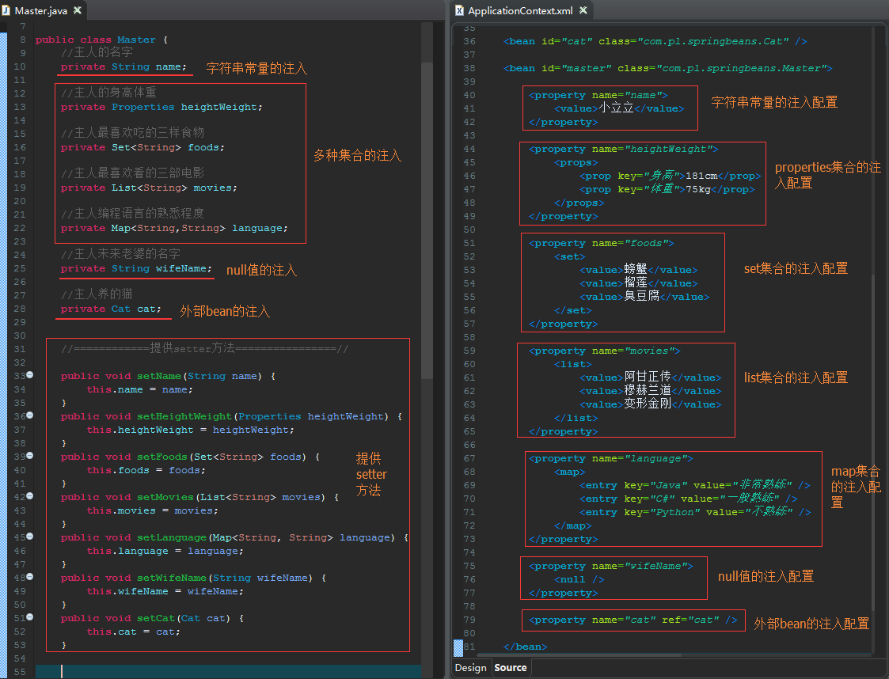
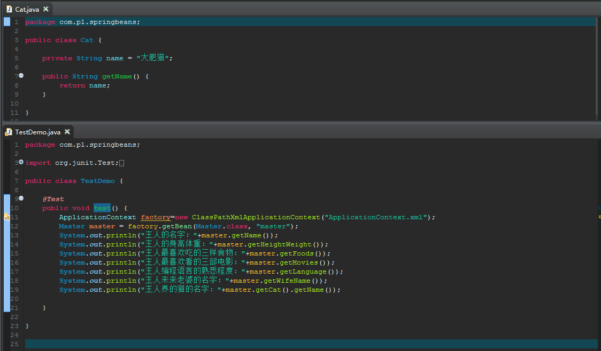
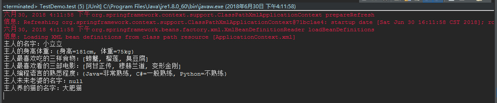

容易混淆的概念：bean的实例化和属性（依赖）的注入
bean的实例化和属性（依赖）的注入是不同的两个过程，spring在实例化bean之后随之将属性（依赖）注入到bean的实例中。在使用者调用bean之前，这两步都已经完成了，所以会造成初学者以为bean的实例化一定会伴随着属性（依赖）的注入，其实不然，有bean的实例化不一定有属性（依赖）的注入。如下面这个例子，spring只是进行了bean的实例化，但是并没有进行属性（依赖）的注入操作。

注入的两种方法：基于构造器方式的注入、基于setter方式的注入
基于构造器方式的注入


基于setter方式的注入


可以注入的东西
可以注入的东西有bean、多种集合、字符串常量、null值、empty值等


